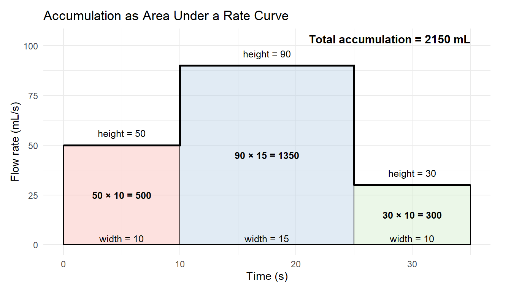

Chapter 3 What Is an Integral?
Understanding Accumulation in Natural Systems
Integrals help us understand how quantities accumulate over time or space. In environmental science, accumulation is everywhere: rivers accumulate runoff, forests accumulate carbon, lakes accumulate pollutants, and organisms accumulate energy. This chapter introduces the integral as a tool for describing total change when the rate of change is known. We begin with intuitive, visual ideas before moving into formal notation.
3.1 Chapter Objectives
By the end of this chapter, you will be able to:
- Explain how integrals model total accumulation in environmental systems and describe real-world examples such as streamflow, photosynthesis, and pollutant load.
- Interpret the area under a rate curve as a measure of total change, including situations with gains, losses, and mixed-sign behavior.
- Construct and evaluate Riemann sums (left, right, and midpoint) to approximate accumulation from graphical or numerical data.
- Use antiderivatives and the Fundamental Theorem of Calculus (informal version) to compute definite integrals representing environmental totals.
- Analyze and interpret accumulation functions to understand how totals build up over time in ecological and physical processes.
3.2 Accumulation in Environmental Systems
Many natural processes are described not by totals but by rates — how fast something is happening. Integrals allow us to turn a rate into a total amount.
Common environmental examples include:
- Streamflow → total river discharge over a day
- Photosynthesis rate → total daily carbon uptake
- Pollutant concentration × flow → total pollutant load entering a lake
- Evapotranspiration → total water loss during a heatwave
- Recruitment rate → total new individuals added to a population
Key idea: If you know the rate at which something changes, the integral gives you the total change over a chosen interval.
A Simple Example: Walking on a Treadmill
Imagine you’re walking on a treadmill at a steady speed of 5 miles per hour. This speed is a rate — it tells you how fast distance is being added as you move.
If you walk at 5 mph for 1 hour, your total distance is:
\[ \text{distance} = \text{rate} \times \text{time} = 5 \times 1 = 5 \text{ miles}. \]
But even if the speed changes during the workout — maybe 4 mph during the warm-up, 5 mph in the middle, and 6 mph at the end — you can still find the total distance by adding up all the little pieces:
- each minute at 4 mph contributes a small amount of distance,
- each minute at 5 mph contributes a bit more,
- each minute at 6 mph contributes even more.
When we add all these tiny contributions together, we get the total distance walked.
This is exactly what an integral does: it adds up the accumulation of a changing rate over time.
3.3 From Rate Curves to Areas Under Curves
When we graph a rate \(f(t)\), the height of the curve represents how fast the system is changing at each moment.
The total accumulation from time \(a\) to \(b\) is the area under the rate curve:
- Height (rate) × width (time) = accumulated amount
- Units multiply:
- \(\text{m}^3/\text{s} \times \text{s} = \text{m}^3\)
- \(\mu\text{mol}/(\text{m}^2\cdot\text{s}) \times \text{s} = \mu\text{mol}/\text{m}^2\)
- \(\text{m}^3/\text{s} \times \text{s} = \text{m}^3\)

Environmental examples:
- Total river discharge from a storm hydrograph
- Total CO₂ absorbed during a sunny day
- Total nitrogen mineralized over a growing season
3.3.1 A Simple Example: Filling a Water Bottle
Suppose you are filling a water bottle from a faucet, and the flow rate changes over time.
- At first, you turn the faucet on gently, and water flows at 50 mL/s.
- A few seconds later, you open it more, and the flow increases to 90 mL/s.
- Near the end, you partially close it, slowing the flow to 30 mL/s.
If you graph this changing flow rate over time, the height of the curve at any moment shows how quickly water is entering the bottle.
To find out how much water ends up in the bottle, you do not multiply a single rate by a single time. Instead, you add up:
- a small amount of water from the low initial rate,
- a larger amount from the high middle rate,
- a small amount again when the flow slows down.
On the graph, these “small amounts” correspond to thin rectangles under the curve.
Adding them all together gives the area under the rate curve, which equals the total volume of water in the bottle.
This is exactly what an integral measures:
> the total accumulation obtained by adding up tiny contributions from a changing rate.

3.4 Riemann Sums: Adding Up Small Pieces
In most real situations, rates are not constant. Streamflow rises and falls during a storm, photosynthesis changes throughout the day, and pollutant inputs vary with human activity. Because of this, we cannot usually find total accumulation by multiplying a single rate by a single time.
Instead, we approximate accumulation by breaking the interval into many small pieces and adding up their individual contributions.
The basic idea works as follows:
- Divide the interval into smaller subintervals of equal width.
- Approximate the rate as constant over each subinterval.
- Compute each slice’s contribution using
\[ \text{(height)} \times \text{(width)}. \] - Add all slices together to estimate the total accumulation.
Each slice represents a small amount of accumulated quantity over a short period of time. When we add them all together, we get an approximation of the total.

3.4.1 Choosing the Height of Each Slice
The key choice in a Riemann sum is how we select the height of each rectangle. Different choices lead to different approximations.
3.4.2 Choosing a Riemann Sum Method
The difference between left, right, and midpoint Riemann sums is not just mathematical—it reflects assumptions about how a system behaves within each subinterval. Choosing a method means deciding when you think the rate best represents the entire slice.

Left Riemann sum:
Uses the rate at the left endpoint of each subinterval.This method assumes the rate remains approximately constant at its initial value over the slice. It is most appropriate when:
- the rate is slowly changing, or
- you want a conservative or early estimate, or
- measurements are taken at the start of each interval.
Common outcomes:
- Tends to underestimate accumulation when the rate is increasing.
- Tends to overestimate accumulation when the rate is decreasing.
Environmental examples:
- Estimating pollutant inflow immediately after a spill
- Using early-morning evapotranspiration rates to estimate daily loss
- the rate is slowly changing, or
Right Riemann sum:
Uses the rate at the right endpoint of each subinterval.This method assumes the rate has already changed to its later value by the start of the slice. It is most appropriate when:
- the process intensifies over time, or
- data are collected at the end of each interval, or
- you want a precautionary upper estimate.
Common outcomes:
- Tends to overestimate accumulation when the rate is increasing.
- Tends to underestimate accumulation when the rate is decreasing.
Environmental examples:
- Estimating peak streamflow during the rising limb of a storm
- Modeling afternoon photosynthesis after sunlight has increased
- the process intensifies over time, or
Midpoint Riemann sum:
Uses the rate at the midpoint of each subinterval.This method assumes the midpoint rate best represents the average behavior of the system over the slice. It is often preferred when:
- the rate changes smoothly, and
- no strong justification exists for early or late sampling, or
- higher accuracy is desired without increasing the number of slices.
Common outcomes:
- Usually provides a better balance between over- and underestimation.
- Often converges to the true value faster than left or right sums.
Environmental examples:
- Estimating daily carbon uptake from smoothly varying light levels
- Approximating total nitrogen mineralization over a growing season
- the rate changes smoothly, and
3.4.3 A Practical Guideline
When in doubt:
- Use left or right sums to reflect specific assumptions about timing or uncertainty.
- Use the midpoint sum as a reliable default for smooth, continuous processes.
- Increase the number of subintervals when accuracy matters more than simplicity.
These choices highlight that Riemann sums are not just numerical tools—they are models of how we believe the system behaves between measurements.
3.5 Approximation and Error in Riemann Sums
It is important to be clear about what Riemann sums are — and what they are not.
A Riemann sum is an approximation, not an exact calculation. By replacing a continuously changing rate with a set of constant rectangles, we introduce error. Each rectangle is only an estimate of what the curve is doing over that interval.
The error comes from a simple source:
The rectangles do not perfectly match the shape of the curve.
Some rectangles extend above the curve, while others fall below it. The difference between the total area of the rectangles and the true area under the curve is called the approximation error.
3.5.1 Why Error Occurs
Error arises because we make two simplifying assumptions:
- The rate is treated as constant within each subinterval.
- The true rate may be increasing, decreasing, or curved within that interval.
If the curve bends significantly, wide rectangles can miss important changes. This is why Riemann sums improve when:
- subintervals are narrower, and
- more rectangles are used.
In the limit, as the width of each subinterval approaches zero, the Riemann sum approaches the definite integral, which represents the exact accumulation.
3.5.2 Overestimates and Underestimates
Whether a Riemann sum overestimates or underestimates the true accumulation depends on both:
- the shape of the rate curve, and
- the method used to choose rectangle heights.
3.5.2.1 Increasing Rate Functions
When the rate is increasing over an interval:
- Left Riemann sums tend to underestimate the total accumulation, because each rectangle uses a rate that is smaller than most of the values in the interval.
- Right Riemann sums tend to overestimate the total accumulation, because they use a larger rate that occurs later in the interval.
- Midpoint Riemann sums usually balance these effects and provide a closer estimate.


3.5.3 Interpreting Error in Environmental Contexts
In environmental science, these distinctions are not just mathematical—they have real consequences.
An underestimate of pollutant load may delay mitigation or regulatory action, while an overestimate of available water can lead to management plans that are unsustainable in practice. Each choice reflects assumptions about timing, uncertainty, and acceptable risk.
For this reason, understanding how and why Riemann sums approximate accumulation is just as important as knowing how to compute them.
In many real-world settings, the objective is not to find a perfectly exact value, but to make a safe, informed, and defensible decision. Under these conditions, deliberately choosing an overestimate or an underestimate is not an error—it is a purposeful modeling choice.
Riemann sums make this choice explicit by allowing us to decide how the rate is sampled within each interval, and therefore how conservative our estimate will be.
3.5.3.1 Conservativeness and Decision-Making
A conservative estimate is one that reduces risk by erring on the side of caution. Whether this means overestimating or underestimating depends entirely on the context and the consequences of being wrong.
The key question is: > What is worse: overestimating or underestimating the true accumulation?
3.5.3.2 When an Underestimate Is Conservative
An underestimate is conservative when overstating the quantity could lead to harm, wasted resources, or unrealistic expectations.
Examples include:
- Water supply planning:
Underestimating total available water avoids promising more water than can reliably be delivered. - Carbon sequestration estimates:
Underestimating carbon uptake prevents overstating climate mitigation benefits. - Wildlife population growth:
Underestimating recruitment avoids overconfidence in population recovery.
In these cases, a left or right Riemann sum may be chosen specifically because it produces a lower bound on the true value.
3.5.3.3 When an Overestimate Is Conservative
An overestimate is conservative when underestimating the quantity could lead to insufficient protection or preparedness.
Examples include:
- Pollutant load calculations:
Overestimating pollutant input ensures regulations are strict enough to protect ecosystems. - Flood risk assessment:
Overestimating peak discharge supports safer infrastructure design. - Resource demand forecasting:
Overestimating energy or water demand helps prevent shortages.
Here, an overestimate functions as a precautionary upper bound, prioritizing safety over efficiency.
3.5.3.4 Choosing a Method Intentionally
Riemann sums make the assumptions behind these choices transparent:
- Left Riemann sums may provide conservative lower or upper bounds depending on whether the rate is increasing or decreasing.
- Right Riemann sums provide the opposite bound.
- Midpoint Riemann sums aim for accuracy rather than conservativeness.
Choosing a method is therefore not just a mathematical step — it is a modeling decision that reflects values, priorities, and acceptable risk.
3.6 Riemann Sums as a Calculus Expression
Up to this point, we have described Riemann sums using words, pictures, and rectangles. These visual and intuitive ideas help us understand what is being added and why accumulation works the way it does. However, intuition alone is not enough when we want to reason precisely, generalize to any function, or prepare for formal definitions.
Calculus provides a compact and precise mathematical language for expressing the idea of “add up many small pieces.” This language allows us to describe accumulation without relying on a specific picture or numerical example, and it works for any rate function and any interval.
That language is called summation notation.
\[ \sum_{i=1}^{n} \]
Summation notation gives us a way to write, in a single expression, the process of:
- breaking an interval into many small pieces,
- approximating the contribution from each piece, and
- adding all of those contributions together.
3.6.1 Rectangle Contributions in Notation
To build a Riemann sum, we first divide the interval \([a,b]\) into \(n\) subintervals of equal width \(\Delta x\).
In each subinterval, we choose a sample point \(x_i^*\).
The rectangle over that subinterval has:
- height: \(f(x_i^*)\)
- width: \(\Delta x\)
Each rectangle therefore contributes approximately \[ f(x_i^*)\,\Delta x \] to the total accumulation.
3.6.1.1 Width of the Rectangle

Because the interval from \(a\) to \(b\) has been divided into \(n\) equal subintervals, each slice has the same width.
The total length of the interval is: \[ b - a. \]
As illustrated above, dividing the interval into \(n\) equal parts gives a common width: \[ \Delta x = \frac{b - a}{n}. \]
This value, \(\Delta x\), represents the width of each rectangle in a Riemann sum. As \(n\) increases, \(\Delta x\) becomes smaller, and the rectangles provide a more accurate approximation of the accumulation.
3.6.1.2 Determining the Height of Each Rectangle
The height of each rectangle in a Riemann sum is determined by evaluating the rate function at a chosen sample point within each subinterval.
For the \(i\)-th subinterval, we select a point \(x_i^*\). The height of the corresponding rectangle is then \[ f(x_i^*). \]
Different choices of the sample point lead to different Riemann sum methods:
- Left endpoint: \(x_i^*\) is chosen at the left end of the subinterval.
- Right endpoint: \(x_i^*\) is chosen at the right end of the subinterval.
- Midpoint: \(x_i^*\) is chosen at the center of the subinterval.
Each choice reflects an assumption about how the rate behaves within the subinterval and results in a different approximation of the total accumulation.

3.6.1.3 Combining Width and Height
Once the width and height of each rectangle have been determined, we combine them to approximate how much accumulation occurs over that subinterval.
- The height of the rectangle, \(f(x_i^*)\), represents the value of the rate.
- The width, \(\Delta x\), represents the length of the subinterval.
Multiplying these together gives the area of a single rectangle: \[ \text{area of one rectangle} \;\approx\; f(x_i^*)\,\Delta x. \]
This area represents a small contribution to the total accumulation over the interval. By computing this product for each subinterval and then adding all of the results together, we build an approximation of the total accumulation.
This step—multiplying rate by width—is the core idea behind Riemann sums and mirrors the familiar calculation
\[
\text{amount} = \text{rate} \times \text{time}.
\]
The only difference is that, instead of using one rate over the entire interval, we use many small rates over many small widths and add their contributions together.
3.6.2 The Riemann Sum - Adding the Rectangles
After dividing the interval into subintervals, choosing sample points, and combining the width and height of each rectangle, we can describe the entire approximation in a single mathematical expression.
A Riemann sum is written as \[ \sum_{i=1}^{n} f(x_i^*)\,\Delta x. \]
This notation compactly represents the process of adding up the areas of all \(n\) rectangles:
- \(i = 1\) to \(n\) indicates that we are summing over all subintervals,
- \(f(x_i^*)\) gives the height of the rectangle in the \(i\)-th subinterval,
- \(\Delta x\) gives the common width of each rectangle.
Each term \(f(x_i^*)\,\Delta x\) approximates the accumulation over a single subinterval. The entire sum approximates the total accumulation of the rate \(f(x)\) over the interval \([a,b]\).
Although the Riemann sum depends on the choice of sample points and the number of subintervals, it provides a systematic way to approximate accumulation. As the number of subintervals increases and \(\Delta x\) becomes smaller, the Riemann sum becomes a better approximation of the true total accumulation.
3.6.3 Left, Right, and Midpoint Riemann Sums in Notation
The choice of sample point \(x_i^*\) determines the type of Riemann sum:
Left Riemann sum:
\[ x_i^* = a + (i - 1)\Delta x \]Right Riemann sum:
\[ x_i^* = a + i\Delta x \]Midpoint Riemann sum:
\[ x_i^* = a + \left(i - \tfrac{1}{2}\right)\Delta x \]
Each choice corresponds exactly to the graphical constructions explored earlier — the notation simply makes the process compact and precise.
3.6.4 Example 1: Approximating Accumulation with a Left Riemann Sum
Let \[ f(x) = x^2 \] and consider the interval \([1,7]\).
We will approximate the area under \(f(x)\) from \(x=1\) to \(x=7\) using a left-hand Riemann sum with \(n = 3\) subintervals.

3.6.4.1 Step 1: Compute the Width \(\Delta x\)
The width of each subinterval is \[ \Delta x = \frac{b-a}{n} = \frac{7 - 1}{3} = 2. \]
3.6.4.2 Step 2: Identify the Left Endpoints
For a left Riemann sum, the sample points are given by \[ x_i^* = a + (i - 1)\Delta x. \]
In this example, \(a = 1\) and \(\Delta x = 2\). Using the formula:
\[ \begin{aligned} x_1^* &= 1 + (1 - 1)(2) = 1, \\ x_2^* &= 1 + (2 - 1)(2) = 3, \\ x_3^* &= 1 + (3 - 1)(2) = 5. \end{aligned} \]
These values are the left endpoints of the subintervals \[ [1,3],\quad [3,5],\quad [5,7]. \]
3.6.4.3 Step 3: Evaluate the Function at Each Left Endpoint
\[ f(1) = 1^2 = 1,\quad f(3) = 3^2 = 9,\quad f(5) = 5^2 = 25. \]
3.6.4.4 Step 4 (continued): Factoring Out \(\Delta x\)
Notice that each term in the Riemann sum includes the same factor \(\Delta x\). Because this width is constant for all rectangles, we can factor it out of the sum.
Starting from \[ \sum_{i=1}^{3} f(x_i^*)\,\Delta x, \] we rewrite this as \[ \Delta x \sum_{i=1}^{3} f(x_i^*). \]
In this example, \(\Delta x = 2\), so the expression becomes \[ 2 \sum_{i=1}^{3} f(x_i^*). \]
Substituting the function values at the left endpoints: \[ 2(1 + 9 + 25). \]
Factoring out \(\Delta x\) highlights an important idea:
- the sum \(\sum f(x_i^*)\) adds up the rectangle heights, and
- the factor \(\Delta x\) scales that total by the common width of each rectangle.
This separation makes the structure of a Riemann sum clearer:
we first combine the heights, then multiply by the width to convert those heights into areas.
Computing the final value, \[ 2(35) = 70, \] which matches the left-hand Riemann sum estimate found earlier.
3.6.5 Example 2: Right-Hand Riemann Sum
Let \[ f(x) = x^2 \] on the interval \([1,7]\), with \(n = 3\).
3.6.5.2 Step 2: Identify the Right Endpoints
For a right Riemann sum, the sample points are \[ x_i^* = a + i\Delta x. \]
With \(a=1\) and \(\Delta x=2\): \[ \begin{aligned} x_1^* &= 1 + 1(2) = 3,\\ x_2^* &= 1 + 2(2) = 5,\\ x_3^* &= 1 + 3(2) = 7. \end{aligned} \]
3.6.6 Example 3: Midpoint Riemann Sum
We now repeat the calculation using midpoints.
3.6.6.2 Step 2: Identify the Midpoints
For a midpoint Riemann sum, the sample points are \[ x_i^* = a + \left(i - \tfrac{1}{2}\right)\Delta x. \]
With \(a=1\) and \(\Delta x=2\): \[ \begin{aligned} x_1^* &= 1 + \tfrac{1}{2}(2) = 2,\\ x_2^* &= 1 + \tfrac{3}{2}(2) = 4,\\ x_3^* &= 1 + \tfrac{5}{2}(2) = 6. \end{aligned} \]
3.6.7 Comparison

The figure above compares left, midpoint, and right Riemann sums for the function
\[
f(x) = x^2
\]
on the interval \([1,7]\), using the same partition with \(n=3\) subintervals. Each panel shows the same curve and same interval—the only difference is how the height of each rectangle is chosen.
Because \(f(x)=x^2\) is increasing on \([1,7]\), the choice of sample point has a predictable effect on the estimate:
Left Riemann sum (left panel):
Each rectangle uses the function value at the left endpoint of its subinterval. Since the function increases as \(x\) increases, these heights are smaller than most of the values in each slice. As a result, the rectangles lie mostly below the curve, producing an underestimate of the true area.Right Riemann sum (right panel):
Each rectangle uses the function value at the right endpoint. These heights are larger than most of the values in each subinterval, so the rectangles extend above the curve, producing an overestimate of the true area.Midpoint Riemann sum (middle panel):
Each rectangle uses the function value at the midpoint of the subinterval. For a smooth, steadily increasing function like \(x^2\), this choice tends to balance the regions where rectangles fall above and below the curve. The result is typically a closer approximation to the true area.
This comparison highlights an important idea:
Riemann sums are not just numerical tools—they encode assumptions about how a function behaves within each subinterval.
Understanding how these assumptions affect overestimation and underestimation prepares us to think more carefully about approximation error and motivates the transition to the definite integral, which captures the exact accumulated area as the number of subintervals becomes arbitrarily large.
3.7 Refining the Approximation
Riemann sums provide a structured way to estimate accumulation, but their accuracy depends on how finely we divide the interval. Because each rectangle assumes the rate is constant over its width, any variation in the rate within a slice contributes to approximation error.
Riemann sums become more accurate as:
- the number of subintervals increases, and
- the width of each slice decreases.
When slices are wide, rectangles may either miss important changes in the rate or exaggerate them, leading to noticeable overestimates or underestimates. As the slices become narrower, each rectangle captures a smaller portion of the curve, and the assumption of a nearly constant rate within each slice becomes more reasonable.
Graphically, thinner rectangles conform more closely to the shape of the rate curve. The gaps between the curve and the tops of the rectangles—whether above or below—shrink, and the total approximation error decreases.
In the limit, as the width of each subinterval approaches zero and the number of slices grows without bound, the Riemann sum converges to a single, well-defined value. This limiting value is the definite integral, which represents the exact total accumulation of the quantity over the interval.
This process formalizes the intuitive idea of “adding up many tiny contributions” and provides the conceptual bridge between graphical accumulation and the precise mathematical definition of the integral introduced in the next section.

3.7.1 Increasing \(n\)
So far, we have compared different Riemann sum methods while holding the number of rectangles fixed. We now explore a different question:
What happens if we keep the method the same, but increase the number of rectangles?
Using the same function \[ f(x) = x^2 \] on the interval \([1,7]\), we construct left-hand Riemann sums with increasing numbers of subintervals: \[ n = 3,\quad n = 8,\quad n = 200. \]
In all three cases, the rectangles use left endpoints, so any changes in the estimate are due entirely to changing the width \(\Delta x\), not the sampling method.

All three panels show left-hand Riemann sums for the same function, \[ f(x) = x^2, \] on the same interval \([1,7]\). The only difference between the panels is the number of subintervals used.
Because \(f(x)=x^2\) is increasing on \([1,7]\), every left-hand Riemann sum produces an underestimate of the true area. However, the size of that underestimate depends strongly on the number of rectangles.
3.7.1.1 Case 1: \(n = 3\)
The width of each subinterval is \[ \Delta x = \frac{7 - 1}{3} = 2. \]
The left endpoints are \[ x_1^* = 1,\quad x_2^* = 3,\quad x_3^* = 5. \]
The left-hand Riemann sum is \[ \sum_{i=1}^{3} f(x_i^*)\,\Delta x = 2\,[1^2 + 3^2 + 5^2] = 2(1 + 9 + 25) = 70. \]
This estimate is quite low because the rectangles are wide and the function increases rapidly over each subinterval.
3.7.1.2 Case 2: \(n = 8\)
The width of each subinterval is \[ \Delta x = \frac{7 - 1}{8} = \frac{6}{8} = 0.75. \]
The left endpoints are \[ x_i^* = 1 + (i-1)(0.75), \quad i = 1,\dots,8. \]
The left-hand Riemann sum is \[ \sum_{i=1}^{8} f(x_i^*)\,\Delta x = 0.75 \sum_{i=1}^{8} \bigl(1 + (i-1)(0.75)\bigr)^2. \]
Evaluating this sum gives \[ \sum_{i=1}^{8} f(x_i^*)\,\Delta x \approx 96.56. \]
This estimate is still an underestimate, but the rectangles are narrower and track the curve more closely, significantly reducing the error.
3.7.1.3 Case 3: \(n = 20\)
The width of each subinterval is \[ \Delta x = \frac{7 - 1}{20} = 0.3. \]
The left endpoints are \[ x_i^* = 1 + (i-1)(0.3), \quad i = 1,\dots,20. \]
The left-hand Riemann sum is \[ \sum_{i=1}^{20} f(x_i^*)\,\Delta x = 0.3 \sum_{i=1}^{20} \bigl(1 + (i-1)(0.3)\bigr)^2. \]
Evaluating this sum gives \[ \sum_{i=1}^{20} f(x_i^*)\,\Delta x \approx 106.89. \]
With many narrow rectangles, the assumption that the function is nearly constant over each subinterval becomes much more reasonable, and the approximation is now quite close to the true area.
3.7.1.4 Comparison with the True Value
The exact area under the curve is given by the definite integral: \[ \int_1^7 x^2\,dx = \left[\frac{x^3}{3}\right]_1^7 = \frac{343 - 1}{3} = 114. \]
Comparing all four values:
- Left Riemann sum with \(n=3\): \(70\)
- Left Riemann sum with \(n=8\): \(\approx 96.56\)
- Left Riemann sum with \(n=20\): \(\approx 106.89\)
- Exact area: \(114\)
Each left-hand Riemann sum approaches the true value from below as \(n\) increases.
This illustrates a central idea of calculus:
Riemann sums become more accurate as the number of subintervals increases and the width \(\Delta x\) decreases.
In the limit, as \(n \to \infty\) and \(\Delta x \to 0\), the Riemann sum converges to the definite integral, which represents the exact accumulated area.
3.8 Beyond Rectangles: More Accurate Approximation Methods
Riemann sums approximate accumulation using rectangles, which assume the rate is constant over each subinterval. As we have seen, this assumption becomes more reasonable as the rectangles get narrower. However, when the rate changes smoothly, we can often do better without dramatically increasing the number of subintervals.
Two widely used methods—the Trapezoidal Rule and Simpson’s Rule—improve accuracy by using better geometric approximations of the curve within each subinterval.
Rather than replacing the curve with flat tops, these methods account for how the function changes within each slice.
3.9 The Trapezoidal Rule
The Trapezoidal Rule improves on left and right Riemann sums by approximating the region under the curve with trapezoids instead of rectangles.
Rather than assuming the function is constant over each subinterval, this method assumes the function changes linearly between consecutive points.
3.9.1 Idea
Over each subinterval \([x_{i-1}, x_i]\), we approximate the curve by a straight line connecting the points
\((x_{i-1}, f(x_{i-1}))\) and \((x_i, f(x_i))\).
The area under this line segment is then approximated by the area of a trapezoid.
This approach effectively averages the left- and right-endpoint values, reducing the systematic overestimation or underestimation seen with basic Riemann sums.

Both panels use the same function, the same interval, and the same partition. The only difference is how the function is approximated within each subinterval.
In the left-hand Riemann sum (left panel), each rectangle assumes the function remains constant at its left endpoint. Because \(f(x)=x^2\) is increasing on \([1,7]\), this systematically underestimates the area on every subinterval.
In contrast, the trapezoidal rule (right panel) connects the endpoint values with a straight line and uses the resulting trapezoid to approximate the area. This effectively averages the left- and right-endpoint values on each subinterval, capturing the upward trend of the function within the slice. As a result, the trapezoidal rule reduces the bias seen in the rectangular approximation and produces a visibly closer estimate to the true area.
This comparison highlights a key idea:
Improving an approximation is not only about using more subintervals, but also about using a better model of how the function behaves between points.
The trapezoidal rule represents a natural step beyond rectangles by incorporating information from both ends of each subinterval, while still remaining simple and computationally efficient.
3.9.2 Area of a Single Trapezoid
The area of a trapezoid with:
- base width \(\Delta x\),
- left height \(f(x_{i-1})\),
- right height \(f(x_i)\),
is given by \[ \text{Area of trapezoid} = \frac{1}{2} \bigl[f(x_{i-1}) + f(x_i)\bigr]\Delta x. \]
This formula reflects a simple geometric idea: > the area equals the average of the two heights times the width.
3.9.3 Adding the Trapezoids Together
To approximate the total accumulation over the interval \([a,b]\), we divide it into \(n\) equal subintervals of width \[ \Delta x = \frac{b-a}{n}. \]
Each subinterval contributes one trapezoid. Adding the areas of all trapezoids gives: \[ \sum_{i=1}^{n} \frac{1}{2} \bigl[f(x_{i-1}) + f(x_i)\bigr]\Delta x. \]
Factoring out the common constants, \[ \frac{\Delta x}{2} \sum_{i=1}^{n} \bigl[f(x_{i-1}) + f(x_i)\bigr]. \]
Rewriting this sum reveals the familiar trapezoidal pattern: \[ \frac{\Delta x}{2} \left[ f(x_0) + 2f(x_1) + 2f(x_2) + \cdots + 2f(x_{n-1}) + f(x_n) \right]. \]
3.9.4 Interpretation
- The first and last function values appear once, because they belong to only one trapezoid.
- Every interior function value appears twice, because it serves as the right endpoint of one trapezoid and the left endpoint of the next.
- By averaging endpoint values, the trapezoidal rule often provides a more accurate approximation than left- or right-hand Riemann sums, especially for smooth functions.
The trapezoidal rule can be viewed as a natural bridge between rectangle-based approximations and more advanced methods that model curvature directly.
3.9.5 Example: Trapezoidal Rule
Let \[ f(x) = x^2 \] on the interval \([1,7]\), with \(n = 3\).
3.9.5.2 Step 2: Identify the Partition Points
For the trapezoidal rule, we use both endpoints of each subinterval.
The partition points are: \[ \begin{aligned} x_0 &= 1,\\ x_1 &= 3,\\ x_2 &= 5,\\ x_3 &= 7. \end{aligned} \]
3.9.5.3 Step 3: Evaluate the Function at Each Partition Point
\[ \begin{aligned} f(1) &= 1,\\ f(3) &= 9,\\ f(5) &= 25,\\ f(7) &= 49. \end{aligned} \]
3.9.5.4 Step 4: Apply the Trapezoidal Rule Formula
The trapezoidal rule combines adjacent endpoint values using: \[ \text{Area} \approx \frac{\Delta x}{2} \left[ f(x_0) + 2f(x_1) + 2f(x_2) + f(x_3) \right]. \]
Substitute the values: \[ \frac{2}{2} \left[ 1 + 2(9) + 2(25) + 49 \right]. \]
Simplify: \[ 1 \left(1 + 18 + 50 + 49\right) = 118. \]
3.9.5.6 Interpretation
The trapezoidal rule improves on basic Riemann sums by accounting for how the function changes between subinterval endpoints. Because it averages left- and right-endpoint values, it reduces systematic over- or underestimation.
We summarize the different numerical approximations for the area under
\[
f(x) = x^2
\]
on the interval \([1,7]\), using \(n = 3\) subintervals.
The true area is given by the exact value: \[ \int_1^7 x^2\,dx = \frac{1}{3}\left(7^3 - 1^3\right) = \frac{342}{3} = 114. \]
| Method | Approximation | Error (Approx − True) | Interpretation |
|---|---|---|---|
| Left-hand Riemann sum | \(70\) | \(-44\) | Strong underestimate |
| Right-hand Riemann sum | \(166\) | \(+52\) | Strong overestimate |
| Midpoint Riemann sum | \(112\) | \(-2\) | Very close underestimate |
| Trapezoidal rule | \(118\) | \(+4\) | Moderate overestimate |
| Exact value | 114 | \(0\) | True area |
3.9.6 Key Takeaways
- The left-hand sum severely underestimates because \(f(x)=x^2\) is increasing.
- The right-hand sum severely overestimates for the same reason.
- The midpoint rule performs exceptionally well, even with a small number of rectangles.
- The trapezoidal rule balances left and right information and improves accuracy compared to basic Riemann sums.
- Increasing \(n\) would reduce the error for all methods, but midpoint and trapezoidal rules converge faster.
This comparison highlights why more sophisticated methods are often preferred when accuracy matters.
3.10 Accuracy Trade-Offs: Shape vs. Number of Subintervals
When approximating accumulation, there are two fundamentally different ways to improve accuracy:
- Use a better-shaped approximation over each subinterval, or
- Use more subintervals, making each piece smaller.
Both strategies reduce error, but they do so in different ways and come with different trade-offs.
3.10.1 Improving Accuracy by Changing the Shape
Methods like the trapezoidal rule and midpoint rule improve accuracy by better matching the shape of the function over each subinterval.
- Rectangular methods (left and right sums) assume the rate is constant over each slice.
- The trapezoidal rule assumes the rate changes linearly between endpoints.
- The midpoint rule samples where the function is often most representative of the average value.
Because these methods capture more of the function’s behavior within each subinterval, they often produce much better results with the same \(n\).
In our example with \(n = 3\):
- The left and right Riemann sums produced large errors.
- The midpoint and trapezoidal rules were already quite close to the true value.
This shows that choosing a better approximation shape can dramatically improve accuracy without increasing computational effort.
3.10.2 Improving Accuracy by Increasing \(n\)
An alternative strategy is to keep the approximation method fixed and instead increase the number of subintervals.
- As \(n\) increases, each subinterval becomes narrower.
- Over smaller intervals, even a crude approximation (like a rectangle) becomes more accurate.
- In the limit as \(n \to \infty\), all reasonable methods converge to the true value.
This approach is conceptually simple and works for any method, but it comes at a cost:
- More subintervals mean more calculations.
- For hand computations, large \(n\) quickly becomes impractical.
- For real data, increasing \(n\) may require finer measurements or higher sampling rates.
3.10.3 Comparing the Two Strategies
| Strategy | Advantage | Limitation |
|---|---|---|
| Better shape (midpoint, trapezoid) | High accuracy with small \(n\) | More complex formulas |
| Larger \(n\) | Conceptually simple, universally applicable | More computation and data |
In practice, these strategies are often combined: a moderate \(n\) paired with a more accurate method yields reliable results with reasonable effort.
3.10.4 A Modeling Perspective
From a modeling standpoint, this trade-off reflects an important question:
Do we trust a simple model applied many times, or a more realistic model applied fewer times?
The answer depends on context:
- When data are sparse, better-shaped approximations are often preferable.
- When data are abundant or computation is automated, increasing \(n\) may be easier.
- When risk matters, conservative methods may still be chosen deliberately.
Understanding this trade-off prepares us for the next step in calculus, where the definite integral emerges as the ideal limit—combining infinitely thin subintervals with perfect accuracy.
3.11 Negative Area and Signed Accumulation
So far, we have focused on situations where the rate function is positive, meaning the accumulated quantity increases over time or space. However, many real systems involve losses, outflows, or decreases. Calculus handles these naturally through the idea of signed area.
3.11.1 What Is a Negative Area?
When a function lies below the horizontal axis, its values are negative. In this case:
- The area between the curve and the axis is counted as negative.
- This does not represent a physical area in the usual geometric sense.
- Instead, it represents a decrease or loss in the accumulated quantity.
In calculus, accumulation is signed: - Area above the axis contributes positively. - Area below the axis contributes negatively.
3.11.2 Why This Makes Sense Conceptually
Think of a rate as describing change:
- Positive rate → quantity increases
- Negative rate → quantity decreases
The integral (or Riemann sum) adds up all changes, including losses. The result represents the net change over the interval.
Environmental examples include:
- Evaporation exceeding precipitation (net water loss)
- Respiration exceeding photosynthesis (net carbon loss)
- Pollutant removal or decay (negative loading)
- Population decline (negative growth rate)
3.11.3 A Simple Example
Consider the rate function \[ f(x) = x - 2 \] on the interval \([0,4]\).
- For \(x < 2\), the rate is negative.
- For \(x > 2\), the rate is positive.
The total accumulation depends on both regions.

3.11.4 Interpretation of the Result
- From \(x = 0\) to \(x = 2\), the rate \(f(x)\) is negative, producing a negative contribution to accumulation.
- From \(x = 2\) to \(x = 4\), the rate \(f(x)\) is positive, producing a positive contribution.
- These two contributions have equal magnitude but opposite signs, so they cancel exactly.
A net accumulation of zero does not mean that nothing happened. Instead, it means that the total gain over part of the interval exactly balanced the total loss over another part.
3.11.5 Why Signed Accumulation Matters
In real systems, gains and losses often occur simultaneously or sequentially:
- A lake may gain water during storms and lose water through evaporation.
- An ecosystem may fix carbon during the day and respire carbon at night.
- A population may grow during favorable seasons and decline during unfavorable ones.
Integrals and Riemann sums account for all of these effects by treating accumulation as signed rather than purely positive.
3.11.6 Key Takeaway
Area below the axis represents negative accumulation, not a mistake or anomaly.
Integrals measure net change over an interval, capturing both increases and decreases in a system.
This idea is essential for interpreting accumulation correctly in environmental, biological, and physical contexts.